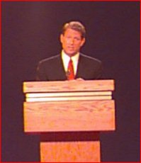

Here's a list of issue areas that were raised in
tonight's debate and the real Clinton/Gore record.
(Click on each issue for the full record).
Economic Growth
Dole Tax Plan
Supply Side
Economics
Empowerment Zones
Welfare
Education
Clinton/Gore Tax Cut
Proposals
Social Security
Medicare
Mexico
Cutting Government
Regulations
Haiti
|
 |
Phillip Rugel — Atlanta,
GA
“He was eloquent and presented many thoughtful
observations and vision for the future.”
Ellis Baggs
“The debate obviously went to Gore.”
Charles Sensale — Hewitt, NJ
“the Vice President is doing an excellent job of
defending the administration's record.”
Tim McBrady — South Portland, ME
“I am totally blown away by Vice President Gore's
performance.”
Darren Anderson — Waite Park, MN
“I'm already fired-up for this election, now I'm more
so.”
Paul Silva — Roosevelt, NY
“Vice President Gore was incredibly well prepared...”
Kathryn Aaron — Sunnyvale, CA
“Although I am not old enough to vote...”
Maryjane Schwartz — Green Bay, WI
“V.P. Gore proved yet again to be a man of, and for,
the people.”
Florence Slater — Scottsdale, AZ
“I have not been so impressed by a politician since
seeing JFK many years ago.”
John De Leon — Austin, TX
“I AM better off today then I was during the previous
Republican administration.”
|